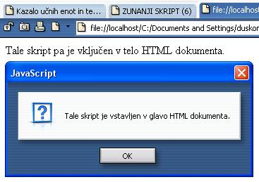
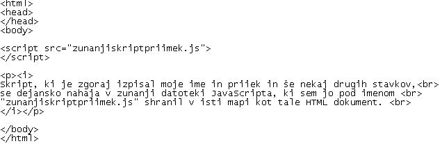
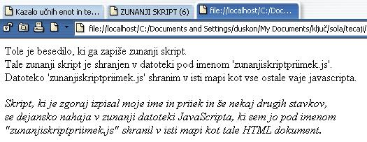

Naš najpomembnejši cilj v življenju bi moralo biti dviganje duše. Z drugimi besedami; razvijanje naših moralnih in duhovnih moèi. Razsvetljujmo našega duha vsak dan in vsak dan se poèutimo vedno bolj svobodni in bolj plemeniti. (Sokrat)
 Slika 1 in 2: Skript v glavi in telesu - koda in videz spletne strani
Slika 1: Zunanji skript - koda zunanje JavaScript datoteke. Slika 2: Koda strani, ki poklièe zunanji skript. Slika 3: Zunanji skript - videz spletne strani, ki poklièe zunanji skript. 1. Izdelaj spletno stran, ki bo izgledala tako, kot kažeta sliki 1 in 2. Datoteko poimenuj "06apriimek.html". Ne pozabi na konènico ".html". 2. Izdelaj spletno stran, ki bo izgledala tako, kot kažejo slike 3, 4 in 5. HTML datoteko poimenuj "06bpriimek.html". Ne pozabi na konènico ".html". Zunanjo skriptno datoteko pa poimenuj "zunanjiskriptpriimek.js". Ne pozabi na konènico ".js". V ime JavaScript datoteke in v klic zunanjega skripta na HTML strani vpiši tvoj priimek. POZOR: Najprej NATANÈNO izdelaj vajo v tej uèni enoti in jo pokaži profesorju, nato zapiši odgovore na spodnja vprašanja. 3. V kodo primera v tej uèni enoti vstavi spodaj navedene komentarje na ustrezna mesta, ki jih ti komentarji pojasnjujejo. //Zaèetek in konec skripta v HTML dokumentu. //Izpis v HTML. //Konèna znaèka telesa HTML dokumenta. //Klic zunanjega skripta v HTML dokument. //Zaèetna znaèka telesa HTML dokumenta. 4. Kodo primera v tej uèni enoti spremeni tako, da bo vseboval še en klic zunanje skriptne datoteke. Ime in vsebino te skriptne datoteke izberi sam/a. 1. Vprašanja za usmerjanje pozornosti in usvajanje novih besed: 1. Ali je število skriptov, ki jih lahko vstavimo v kodo HTML strani, naèeloma omejeno? 2. Kaj je prednost skupnega skripta za veè spletnih strani skupaj? 3. Kakšna je konènica zunanje JavaScript datoteke? 4. S katero znaèko JavaScripta "poklièemo" oziroma zaženemo zunanjo skriptno datoteko? 5. Katera lastnost znaèke v prejšnjem vprašanju pove mesto in ime zunanje skriptne datoteke, ki jo želimo poklicati oziroma zagnati. 2. Zapiši od ene do pet kljuènih besed, ki povzemajo vsebino te uène enote. 3. Vprašanja za razmislek in povezovanje z lastno izkušnjo: 1. Kateri ukaz ali funkcija JavaScripta je vkljuèen/a v glavo HTML dokumenta na sliki 1? 2. Kateri ukaz ali funkcija JavaScripta je vkljuèen/a v telo HTML dokumenta na sliki 1? 3. Koliko ukazov za izpis besedila je vkljuèenih v zunanjo skriptno datoteko, ki jo lahko vidimo na eni od slik v tej uèni enoti? 4. V zvezek zapiši celotno vsebino znaèke, s katero poklièemo zunanjo skriptno datoteko. To znaèko lahko najdeš na eni od slik v tej uèni enoti. 5. Kako se imenuje zunanja skriptna datoteka v primeru v tej uèni enoti? 6. Kako se imenuje zunanja skriptna datoteka, ki si jo izdelal/a za vajo v tej uèni enoti sam/a? 4. Domaèa naloga: 1. V zvezek prepiši misel, ki je zapisana na zaèetku uène enote z rdeèimi èrkami. Zabeleži nekaj lastnih misli, ki se ti utrnejo ob razmišljanju o njej. 2. Odgovori na vprašanja, na katere nisi uspel/a odgovoriti v šoli. 5. DODATNO DELO: 1. Izdelaj spletno stran, ki bo izgledala tako, kot kažejo slike 3, 4 in 5. HTML datoteko poimenuj "06cpriimek.html", zunanjo javaScript datoteko pa "Zunanjiskriptvaja06c.js". Spremeni tudi besedilo, ki ga izpiše zunanja skriptna datoteka. Zunanji skript naj izpiše en stavek. Ta stavek se glasi:" Sem "Ime" in "Priimek". Namesto "Ime" in "Priimek" zapiši seveda svoje ime in priimek. |